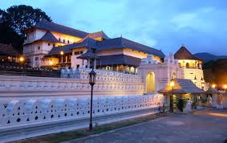
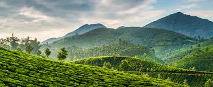
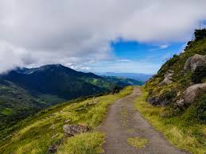
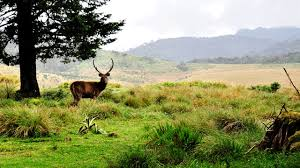
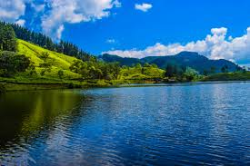
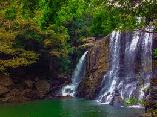

The Central Province is located in the central hills of Sri Lanka. The land area of the province is 5,575 km2 which is 8.6% of the total land area of Sri Lanka. The province lies on 6.6°- 7.7° northern latitudes and between 80.5°-80.9° eastern longitudes.The elevation in the province ranges from 600 ft to over 6000 ft above the sea level. The province is bordered on the north by the North-Central Province, on the east by the River Mahaweli, on the south by Uma Oya and the mountain range of Adam’s Peak, Kirigalpotta and Thotapala and on the west by the mountain ranges Dolosbage and Galagedera.
Currently there are three electoral districts in Central Province such as
- Kandy
- Nuwaraeliya
- Mathale